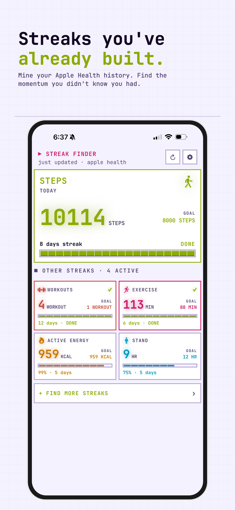
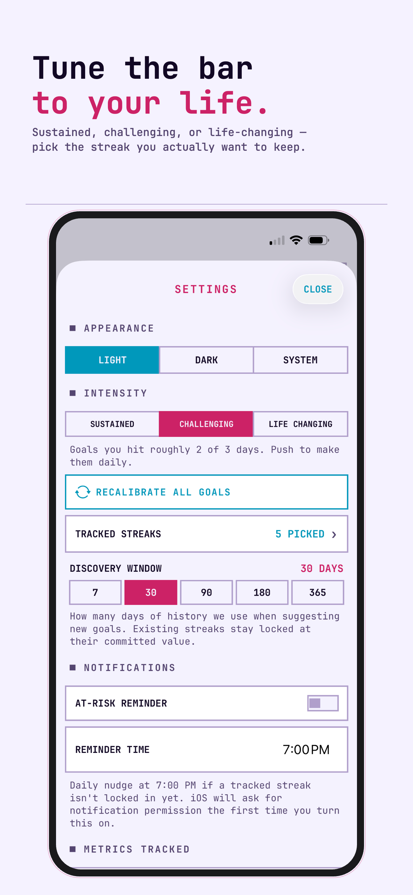
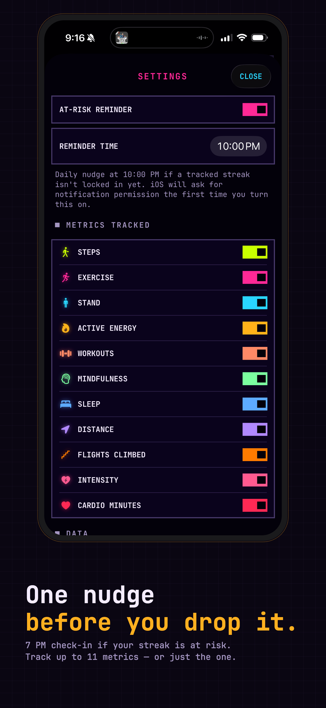

Automatically discover how many days in a row you've hit your goals — all from Apple Health, all on your device. Free to start, with optional Streaks+.
iPhone · Apple Watch · Widgets
Download for free


Everything you already track, now with streaks. Free to start — upgrade to save the ones you almost lost.
Connects to Apple Health and instantly finds the streaks you've already built — no manual logging.
Steps, exercise, stand hours, active energy, workouts, mindfulness, sleep, distance, flights climbed, and more.
Your single best current run is always front and center, with the rest as tappable badges.
Every streak gets a year-view heatmap of hits and misses, so you can see your patterns at a glance.
Miss a day and Streaks+ automatically saves your streak with a planned freeze — no scramble required.
A heads-up before a streak slips, on top of the free 7pm nudge for your hero streak.
See your streaks at a glance without opening the app, on iPhone and StandBy.
Your streaks on your watch face all day — circular, rectangular, corner, and inline styles.
Read-only Apple Health access, on-device processing, no account, no ads, no analytics.
Streak Counter reads from Apple Health in read-only mode and stores everything locally on your device. No accounts, no analytics, no ads, no third-party SDKs, no network requests.
Privacy Policy →How it's built and why it matters.
You already have streaks — you just don't know it. That 47-day walk streak, the 12-week sleep average above 7 hours, the 3-month daily stand goal. They're buried in HealthKit, invisible.
Streak Counter surfaces them automatically, ranks them by how impressive they actually are, and warns you before you break the good ones. No manual logging, no signup, no starting from day one.
An optional upgrade for people who don't want a single missed day to end a real streak. $1.99/month or $14.99/year, both with a 7-day free trial, or $29.99 once for lifetime access.
Grace Day auto-save. Miss a day and Streaks+ automatically covers it with a planned freeze, so the streak keeps going instead of resetting to zero.
At-risk alerts. A heads-up before a streak slips, layered on top of the free 7pm hero-streak nudge.
Broken-streak revive. Just missed one? Starting a Streaks+ trial can revive a recently broken streak instead of losing the progress for good.
| Platform | iOS 17+, watchOS 10+ |
| Language | Swift 6 with strict concurrency |
| Framework | SwiftUI · HealthKit · WidgetKit |
| Data | Read-only HealthKit access, local only |
| Storage | SwiftData cache shared via App Group |
| Widgets | Home Screen, Lock Screen, StandBy, watchOS complications |
The discovery engine. Every metric has multiple threshold tiers. The engine evaluates every (metric, cadence, threshold) combination across 400 days of history, finds contiguous streaks, and ranks by a weighted score of length and difficulty.
Hero streak, not a dashboard of numbers. One streak gets featured — your best current run. Everything else appears as tappable badges. The hero rotates automatically as streaks break and new ones form. No manual curation.
Calendar heatmaps. Each streak has a year-view heatmap showing every hit and miss, with intensity mapped to how far above threshold you landed that day. It's visceral — you can see your patterns.
Widget reliability. Widgets never query HealthKit directly. They read a snapshot the main app writes to App Group storage on every refresh, so they stay instant instead of laggy.
Free on the App Store. No account required. Upgrade to Streaks+ anytime.
Download for free